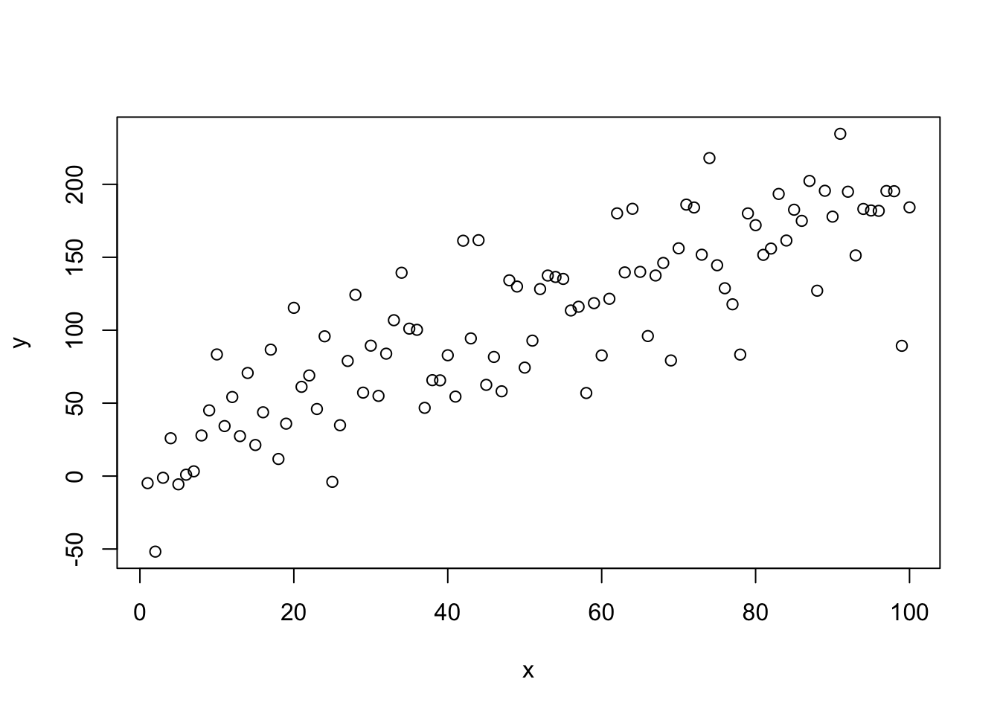
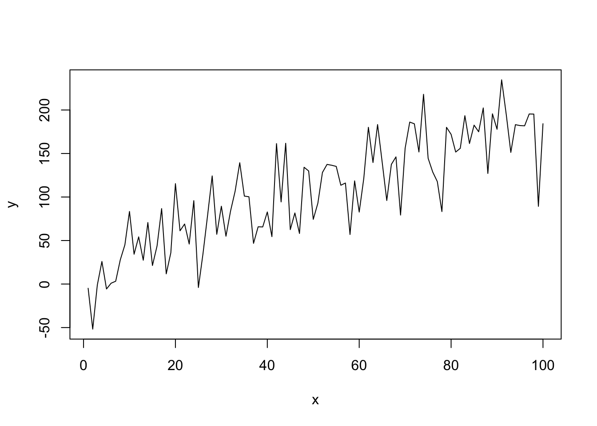
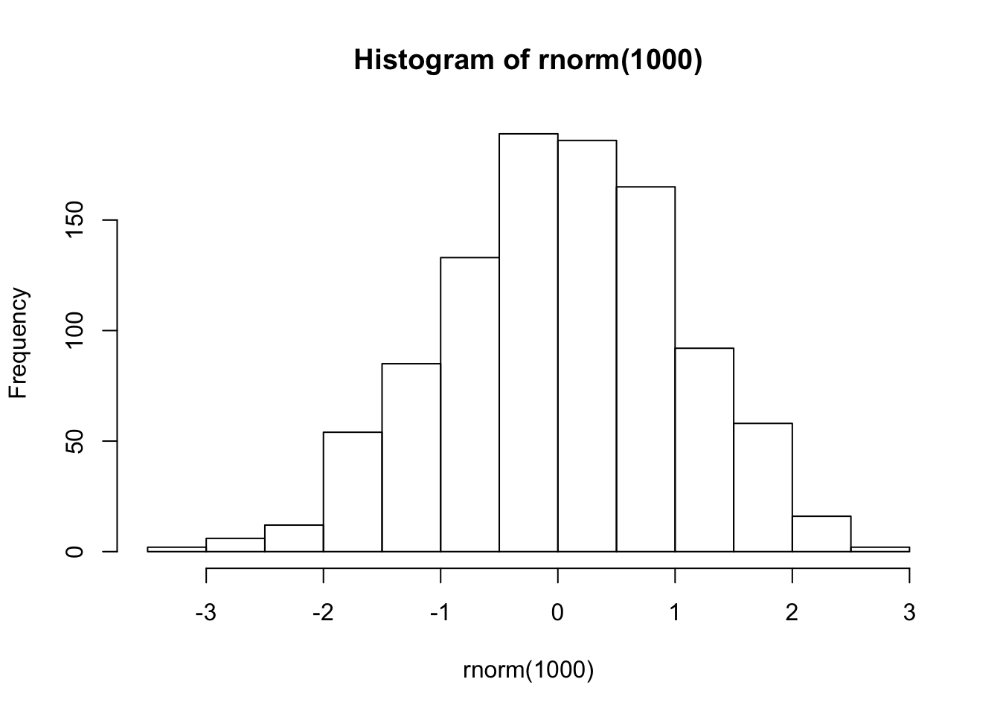
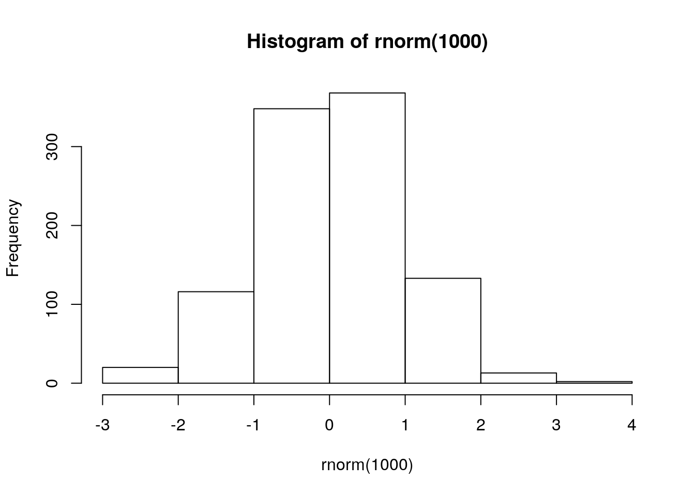
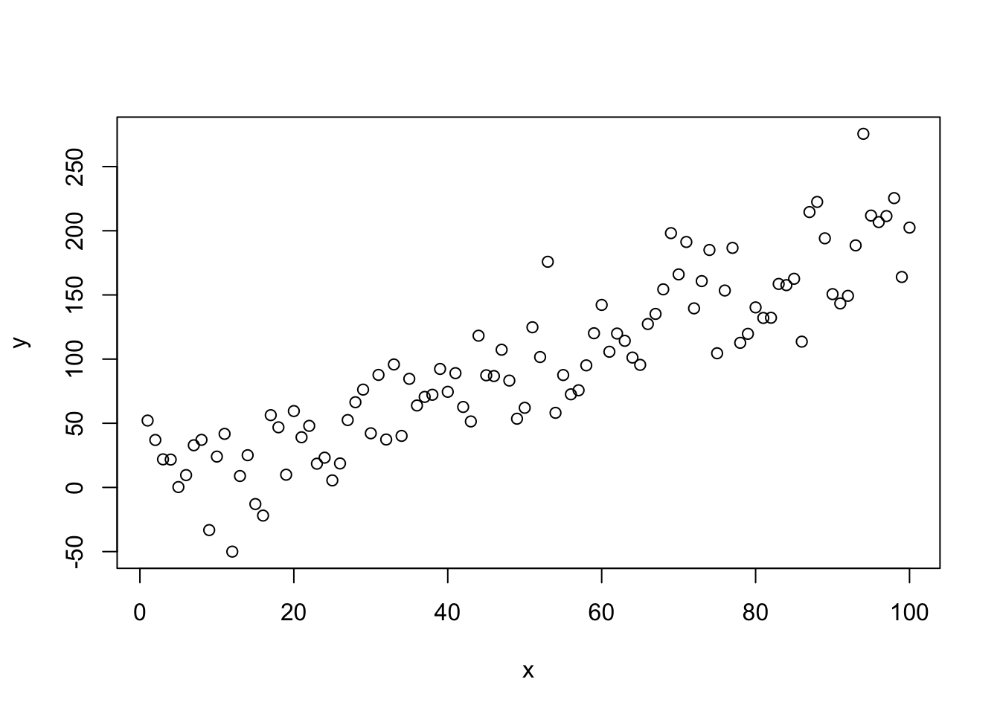
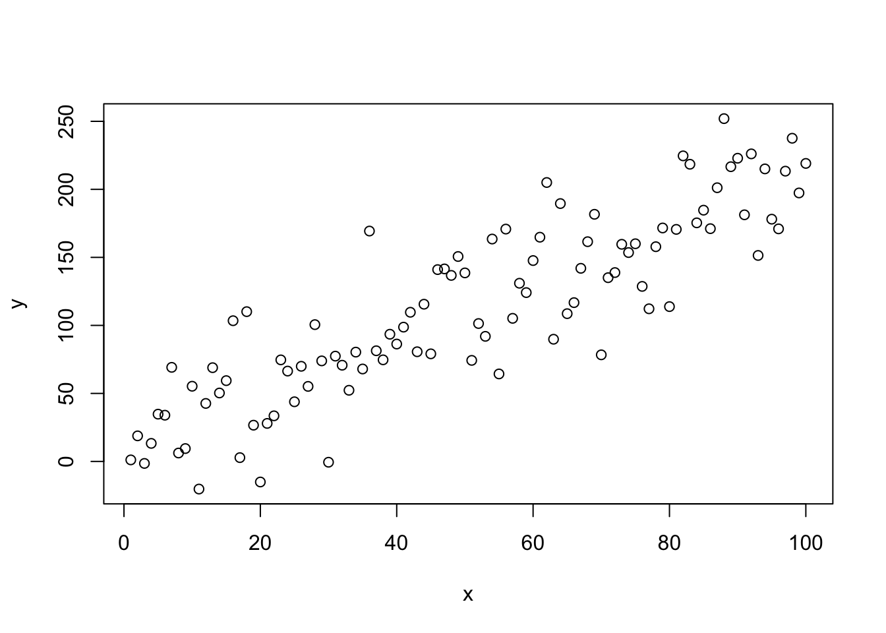
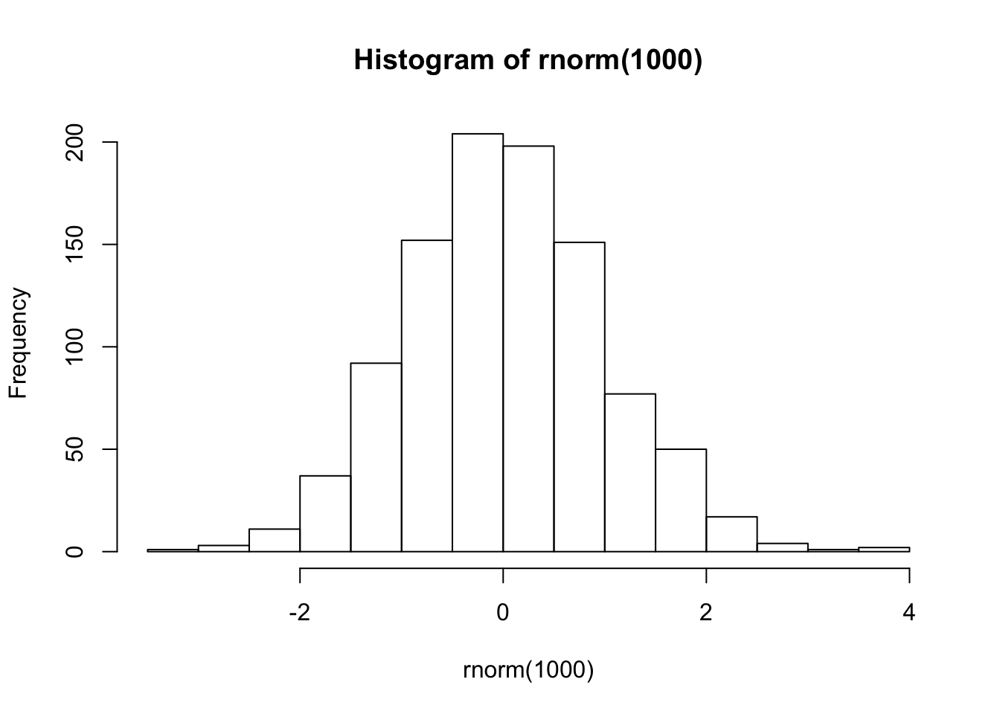

Capítulo 3 R Básico
3.1 Pedindo Ajuda
A linguagem R é bem intuitiva. É possível fazer bastante coisa à base da tentativa e erro. Além disso, grande parte do conhecimento é escalável, isto é, aprender a utilizar uma função é meio caminho andado para aprender todas as outras funções que operam de forma semelhante. Essa ideia é um dos princípios por trás do tidyverse.
No entanto, a intuição não infalível, e recorrentemente vamos precisar de ajuda para rodar alguma função ou descobrir como fazer alguma tarefa no R. Felizmente, a comunidade R é bem ativa e existem vários lugares para buscar respostas. Nesta seção, vamos apresentar as principais maneiras algumas dessas maneiras.
No R, há quatro principais entidades para se pedir ajuda:
- Help/documentação do R (comandos
help(nome_da_funcao)ou?nome_da_funcao) - Stack Overflow
- Coleguinha
A busca por ajuda é feita preferencialmente, mas não necessariamente, na ordem acima.
3.1.1 Documentação do R
A documentação do R serve para você aprender a usar uma determinada função.
Cinco dicas:
- Os exemplos no final são particularmente úteis.
- Leia a seção Usage para ter noção de como usar a função.
- Os parâmetros da função estão descritos em Arguments.
- Caso essa função não atenda às suas necessidades, a seção See Also sugere funções relacionadas.
- Alguns pacotes possuem tutorias de uso mais completos. Esses textos são chamados de
vignettese podem ser acessados com a funçãovignette(package = 'nomeDoPacote'). Por exemplo,vignette(package = 'dplyr'). Depois de ver a lista de artigos, escolha um nome e rodevignette(topic = 'nome', package = 'nomeDoPacote'). Por exemplo,vignette(topic = 'introduction', package = 'dplyr'). - Bases de dados presentes em pacotes também têm documentação, e geralmente é possível encontrar o significado de cada variável nela.
3.1.2 Google
Há uma comunidade gigantesca de usuários de R gerando diariamente uma infinidade de conteúdos e discussões. Não raramente, você irá encontrar discussões sobre o seu problema simplesmente jogando o seu erro no Google. Essa deve ser sua primeira tentativa! Pesquisas em inglês aumentam consideravelmente a chance de encontrar uma resposta.
Exemplo (repare no ‘r’ adicionado na busca, isso ajuda bastante):
## Error in log("5"): non-numeric argument to mathematical function
3.1.3 Stack Overflow
O Stack Overflow e o Stack Overflow em Português são sites de Pergunta e Resposta amplamente utilizados por todas as linguagens de programação, e o R é uma delas. Nos EUA, chegam até a usar a reputação dos usuários como diferencial no currículo!
Provavelmente o Google lhe indicará uma página deles quando você estiver procurando ajuda. E quando todas as fontes possíveis de ajuda falharem, o Stack Overflow lhe dará o espaço para criar sua própria pergunta.
Um ponto importante: como fazer uma boa pergunta no Stack Overflow?
No site, existe um tutorial com uma lista de boas práticas, que se encontra aqui. Resumindo, as principais dicas são
- ser conciso;
- ser específico;
- ter mente aberta; e
- ser gentil.
Porém, no caso do R, há outro requisito que vai aumentar muito sua chance de ter uma boa resposta: exemplinho minimal e reprodutível.
Ser minimal: usar bancos de dados menores e utilizar pedaços de códigos apenas suficientes para apresentar o seu problema. Não precisa de banco de dados de um milhão de linhas e nem colocar o seu código inteiro para descrever a sua dúvida.
Ser reprodutível: o seu código deve rodar fora da sua máquina. Se você não fornecer uma versão do seu problema que rode (ou que imite seu erro), as pessoas vão logo desistir de te ajudar. Por isso, nunca coloque bancos de dados que só você tem acesso. Use bancos de dados que já vem no R ou disponibilize um exemplo (possivelmente anonimizado) em
.csvna web para baixar. E se precisar utilizar funções diferentes, coloque aslibrary’s correspondentes.
3.1.4 R Markdown
O R Markdown é um tipo de documento especial que contém tanto textos em markdown quanto chunks de códigos em R, tudo escrito no mesmo lugar.
O markdown nada mais é do que um documento de texto com alguns padrões básicos de formatação, como negrito, itálico, títulos, subtítulos, itens e referências cruzadas. Já os chunks são pedaços de códigos em R encapsulados por três crases (```). Os códigos são executados sempre que o documento é processado.
## ```{r}
## isto é um chunk.
## ```Este site foi escrito em R Markdown. Toda vez que aparecer exemplos de código de R, havia um chunk no .Rmd original.
Para produção de relatórios, o R Markdown possui algumas vantagens, como:
- Simplicidade e foco. Permite ao usuário o foco na análise e não na formatação do documento.
- Versátil. Pode ser utilizado para gerar documentos em
LaTeX,Word,HTMLe apresentações embeamer,pptxeHTML. Pode ainda gerar sites, livros, dissertações de mestrado e até mesmo dashboards interativos. - Reprodutível. O R Markdown nada mais é que um arquivo de texto. Além disso, ele tenta te obrigar a fazer o documento mais autocontido possível. Assim, um documento
.Rmdé fácil de compartilhar e de ser utilizado pelo receptor. Lembre-se, o receptor pode ser o futuro você! Vale enfatizar que a reprodutibilidade é considerada como um dos princípios fundamentais da ciência. Então, só de usar R Markdown, você já está colaborando com o método científico. :) - Flexível. É possível configurar e criar templates de análises para quaisquer tipos de aplicações e clientes. Os textos podem ser parametrizados por números que variam de versão para versão, mensalmente, por exemplo, tudo escrito somente em R.
Criar um R Markdown novo no RStudio é fácil. Clique no botão de criar arquivo e selecione R Markdown.

Para detalhes sobre como utilizar o R Markdown, leia esta seção do R4DS e o tutorial do RStudio.
3.2 R como calculadora
Pelo console, é possível executar qualquer comando do R.
## [1] 1 2 3 4 5 6 7 8 9 10 11 12 13 14 15 16 17 18 19 20 21 22 23 24 25
## [26] 26 27 28 29 30Esse comando é uma forma simplificada de criar um vetor de inteiros de 1 a 30. Os números que aparecem entre colchetes ([1] e [24]) indicam o índice do primeiro elemento impresso em cada linha.
Quando compilamos? Quem vem de linguagens como o C ou Java espera que seja necessário compilar o código em texto para o código das máquinas (geralmente um código binário). No R, isso não é necessário. O R é uma linguagem de programação dinâmica que interpreta o seu código enquanto você o executa.
Tente jogar no console: 2 * 2 - (4 + 4) / 2.
Pronto! Com essa simples expressão você já é capaz de pedir ao R para fazer qualquer uma das quatro operações aritméticas básicas. A seguir, apresentamos uma lista resumindo como fazer as principais operações no R.
## [1] 2## [1] 2## [1] 6## [1] 1.666667## [1] 16## [1] 2## [1] 1Além do mais, as operações e suas precedências são mantidas como na matemática, ou seja, divisão e multiplicação são calculadas antes da adição e subtração. E os parênteses nunca são demais!
Uma outra forma de executar uma expressão é escrever o código no script e teclar Ctrl + Enter ou Ctrl + R. Assim, o comando é enviado para o console, onde é diretamente executado.
Se você digitar um comando incompleto, como 5 +, e apertar Enter, o R mostrará um +, o que não tem nada a ver com somar alguma coisa. Isso significa que o R está esperando que você complete o seu comando. Termine o seu comando ou aperte Esc para recomeçar.
> 5 -
+
+ 5
[1] 0Se você digitar um comando que o R não reconhece, ele retornará uma mensagem de erro.
NÃO ENTRE EM PÂNICO!
Ele só está avisando que não conseguiu interpretar o comando. Você pode digitar outro comando normalmente em seguida.
> 5 % 5
Error: unexpected input in "5 % 5"
> 5 - 5
[1] 03.3 Objetos e Classes
O R te permite salvar dados dentro de um objeto. Para isso, utilizamos o operador <-.
No exemplo abaixo, salvamos o valor 1 em a. Sempre que o R encontrar o símbolo a, ele vai substituí-lo por 1.
## [1] 1Atenção! O R diferencia letras maiúsculas e minúsculas, isto é, “a” é considerado um objeto diferente de “A”.
3.3.1 Objetos atômicos
Existem cinco classes básicas ou “atômicas” no R:
- character
- numeric
- integer
- complex
- logical
Veja alguns exemplos:
3.3.2 Vetores
Vetores no R são os objetos mais simples que podem guardar objetos atômicos.
## [1] 1 2 3 4## [1] "a" "b" "c"De forma bastante intuitiva, você pode fazer operações com vetores.
## [1] 0 1 2 3Quando você faz vetor1 - 1, o R subtrai 1 de cada um dos elementos do vetor. O mesmo acontece quando você faz qualquer operação aritmética com vetores no R.
Você também pode fazer operações que envolvem mais de um vetor:
## [1] 1 4 9 16Neste caso, o R irá alinhar os dois vetores e multiplicar elemento por elemento. Isso pode ficar um pouco confuso quando os dois vetores não possuem o mesmo tamanho:
## Warning in vetor1 * vetor2: comprimento do objeto maior não é múltiplo do
## comprimento do objeto menor## [1] 1 4 9 4O R alinhou os dois vetores e, como eles não possuíam o mesmo tamanho, foi repetindo o vetor menor até completar o vetor maior. Esse comportamento é chamado de reciclagem e é útil para fazer operações elemento por elemento (vetorizadamente), mas às vezes pode ser confuso. Com o tempo, você aprenderá a se aproveitar dele.
3.3.3 Classes
Para saber a classe de um objeto, você pode usar a função class().
## [1] "numeric"## [1] "character"## [1] "logical"Um vetor tem sempre a mesma classe dos objetos que guarda.
## [1] "numeric"## [1] "integer"3.3.4 Coerção
3.3.4.1 Misturando objetos
Vetores são homogêneos. Os elementos de um vetor são sempre da mesma classe. Ou todos são numéricos, ou são todos character, ou todos são lógicos etc. Não dá para ter um número e um character no mesmo vetor, por exemplo.
Se colocarmos duas ou mais classes diferentes dentro de um mesmo vetor, o R vai forçar que todos os elementos passem a pertencer à mesma classe. O número 1.7 viraria "1.7" se fosse colocado ao lado de um "a".
A ordem de precedência é:
DOMINANTE — character > complex > numeric > integer > logical — RECESSIVO
3.3.4.2 Forçando classes explicitamente
Você pode coagir um objeto a ser de uma classe específica com as funções as.character(), as.numeric(), as.integer() e as.logical(). É equivalente à função convert() do SQL.
## [1] "integer"## [1] 0 1 2 3 4## [1] FALSE TRUE TRUE TRUE TRUE## [1] "0" "1" "2" "3" "4"Se o R não entender como coagir uma classe na outra, ele soltará um warning informado que colocou NA no lugar.
## Warning: NAs introduzidos por coerção## [1] NA NA NAObservação. O NA tem o mesmo papel que o null do SQL. Porém, há um NULL no R também, com diferenças sutis que vamos abordar mais adiante.
3.3.5 data.frame
Um data.frame é o mesmo que uma tabela do SQL ou um spreadsheet do Excel, por isso são objetos muito importantes. Usualmente, seus dados serão importados para um objeto data.frame. Em grande parte do curso, eles serão o principal objeto de estudo.
Os data.frame’s são listas especiais em que todos os elementos possuem o mesmo comprimento. Cada elemento dessa lista pode ser pensado como uma coluna da tabela. Seu comprimento representa o número de linhas.
Já que são listas, essas colunas podem ser de classes diferentes. Essa é a grande diferença entre data.frame’s e matrizes. Algumas funções úteis para trabalhar com data.frame’s :
head()- Mostra as primeiras 6 linhas.tail()- Mostra as últimas 6 linhas.dim()- Número de linhas e de colunas.names()- Os nomes das colunas (variáveis).str()- Estrutura do data.frame. Mostra, entre outras coisas, as classes de cada coluna.cbind()- Acopla duas tabelas lado a lado.rbind()- Empilha duas tabelas.
O exemplo abaixo mostra que uma lista pode virar data.frame apenas se todos os elementos tiverem o mesmo comprimento.
## Error in (function (..., row.names = NULL, check.rows = FALSE, check.names = TRUE, : arguments imply differing number of rows: 3, 2## x y
## 1 1 a
## 2 2 b
## 3 3 c3.3.6 Matrizes
Matrizes são vetores com duas dimensões (e por isso só possuem elementos de uma mesma classe).
## [,1] [,2] [,3]
## [1,] 1 3 5
## [2,] 2 4 6## [1] 2 3Repare que os números de 1 a 6 foram dispostos na matriz coluna por coluna (column-wise), ou seja, preenchendo de cima para baixo e depois da esquerda para a direita.
Operações úteis
3.3.7 Fatores
Fatores podem ser vistos como vetores de inteiros que possuem rótulos (levels).
## [1] M H H H M M H
## Levels: H M## [1] 2 1 1 1 2 2 1Eles são úteis para representar uma variável categórica (nominal e ordinal). Na modelagem, eles serão tratados de maneira especial em funções como lm() e glm().
A função levels() retorna os rótulos do fator:
## [1] "H" "M"A ordem das categorias de um fator pode importar. Como exemplo, temos as caselas de referência de modelos estatísticos e a ordem das barras de um gráfico. Para ajudar nesta tarefa, consulte o pacote forcats.
Um erro comum e desastroso. Quando um vetor de números está como factor, ao tentar transformá-lo em numeric, você receberá um vetor de inteiros que não tem nada a ver com os valores originais!
## [1] 3 5 5 4 3 1 2Para evitar isso, use as.character() antes de transformar para número.
## [1] 10 55 55 12 10 -5 -903.3.8 Listas
Listas são um tipo especial de vetor que aceita elementos de classes diferentes.
## [[1]]
## [1] 1 2 3 4 5
##
## [[2]]
## [1] "Z"
##
## [[3]]
## [1] TRUE
##
## [[4]]
## [1] "a" "b"É um dos objetos mais importantes para armazenar dados e vale a pena saber manuseá-los bem. Existem muitas funções que fazem das listas objetos incrivelmente úteis.
Criamos uma lista com a função list(), que aceita um número arbitrário de elementos. Listas aceitam QUALQUER tipo de objeto. Podemos ter listas dentro de listas, por exemplo. Como para quase todas as classes de objetos no R, as funções is.list() e as.list() também existem.
Na lista pedido abaixo, temos numeric, Date, character, vetor de character e list contida em uma lista:
pedido <- list(pedido_id = 8001406,
pedido_registro = as.Date("2017-05-25"),
nome = "Athos",
sobrenome = "Petri Damiani",
cpf = "12345678900",
email = "athos.damiani@gmail.com",
qualidades = c("incrível", "impressionante"),
itens = list(
list(descricao = "Ferrari",
frete = 0,
valor = 500000),
list(descricao = "Dolly",
frete = 1.5,
valor = 3.90)
),
endereco = list(entrega = list(logradouro = "Rua da Glória",
numero = "123",
complemento = "apto 71"),
cobranca = list(logradouro = "Rua Jose de Oliveira Coutinho",
numero = "151",
complemento = "5o andar")
)
)Operações úteis
pedido$cpf # elemento chamado 'cpf'
pedido[1] # nova lista com apenas o primeiro elemento
pedido[[2]] # segundo elemento
pedido["nome"] # nova lista com apenas o elemento chamado 'nome'Certamente você se deparará com listas quando for fazer análise de dados com o R. Nos tópicos mais aplicados, iremos aprofundar sobre o tema. O pacote purrr contribui com funcionalidades incríveis para listas.
3.4 Valores especiais
Existem valores reservados para representar dados faltantes, infinitos, e indefinições matemáticas.
- NA (Not Available) significa dado faltante/indisponível. É o
nulldo SQL ou o.do SAS. ONAtem uma classe, ou seja, podemos terNAnumeric,NAcharacter etc. - NaN (Not a Number) representa indefinições matemáticas, como
0/0elog(-1). UmNaNé umNA, mas a recíproca não é verdadeira. - Inf (Infinito) é um número muito grande ou o limite matemático, por exemplo,
1/0e10^310. Aceita sinal negativo-Inf. - NULL representa a ausência de informação. Conceitualmente, a diferença entre
NAeNULLé sutil, mas, no R, oNAestá mais alinhado com os conceitos de estatística (ou como gostaríamos que os dados faltantes se comportassem em análise de dados) e oNULLestá em sintonia com comportamentos de lógica de programação. - Use as funções
is.na(),is.nan(),is.infinite()eis.null()para testar se um objeto é um desses valores.
## [1] TRUE FALSE FALSE FALSE FALSE TRUE## [1] TRUE FALSE FALSE FALSE FALSE FALSE3.5 Controles de Fluxo
Como toda boa linguagem de programação, o R possui estruturas de if’s, else’s, for’s, while’s etc. Esses controles de fluxo são importantes na hora de programar.
3.5.1 IF e ELSE
O seguinte trecho de código só será executado se o objeto x for igual a 1. Repare que a condição de igualdade é representada por dois iguais ==.
## [1] "2020-02-20 10:25:35 -03"O R só vai executar o que está na expressão dentro das chaves {} se o que estiver dentro dos parênteses () retornar TRUE.
A sintaxe com o else e o if else é
if(x < 0) {
sinal <- "negativo"
} else if(x == 0) {
sinal <- "neutro"
} else if(x > 0) {
sinal <- "positivo"
}
sinal## [1] "positivo"Diferença entre SQL e R nas comparações lógicas
Igualdade: no SQL é só um sinal de igual: <2 = 1. No R são dois: 2 == 1.
Diferença: teste de diferente no R é != em vez de de <>.
Negação: em vez de usar a palavra “not” igual ao SQL, usamos !. Por exemplo, “entidade_id not in (‘100515’)” fica “!entidade_id %in% c(‘100515’)”.
3.5.2 for
Vamos usar o for para somar todos os elementos de um vetor.
x <- 1:10 # Cria um vetor com a sequência 1, 2, ..., 10.
soma <- 0
for(i in 1:10) {
soma <- soma + x[i]
}
soma## [1] 55De forma equivalente, podemos usar diretamente a função sum().
## [1] 55Agora, vamos imprimir na tela o resultado da divisão de cada elemento de um vetor por dois. Para isso, utilizaremos a função print().
vetor <- 30:35
indices <- seq_along(vetor) # cria o vetor de índices segundo o tamanho
# do objeto vetor.
for(i in indices) {
print(vetor[1:i] / 2)
}## [1] 15
## [1] 15.0 15.5
## [1] 15.0 15.5 16.0
## [1] 15.0 15.5 16.0 16.5
## [1] 15.0 15.5 16.0 16.5 17.0
## [1] 15.0 15.5 16.0 16.5 17.0 17.5No trecho de código acima, preste atenção no resultado individual de cada uma das operações para entender como o R funciona.
3.5.3 while
O código a seguir irá imprimir na tela o valor de i enquanto este objeto for menor que 3. No momento em que a condição dentro das chaves {} não for mais respeitada, o processo será interrompido.
## [1] 1
## [1] 2É importante que o valor de i seja atualizado em cada interação, caso contrário a função entrará em um loop infinito.
Vamos usar o while para encontrar uma aproximação da solução de \(\sqrt{x} = x\). Este método é conhecido como Interação do ponto fixo e pode ser usado no cálculo aproximado de soluções de equações de uma variável real.
## [1] 1.090508Quando a diferença entre \(\sqrt{x}\) e \(x\) ficou menor que 0.1, o loop foi interrompido. Vemos que solução aproximada da equação \(\sqrt{x} = x\) dada pelo algorítmo não difere muito da solução real \(x=1\).
Para finalizar, listamos na tabela abaixo os principais operadores lógicos.
| Operador | Descrição |
|---|---|
| x < y | x menor que y? |
| x <= y | x menor ou igual a y? |
| x > y | x maior que y? |
| x >= y | x maior ou igual a y? |
| x == y | x igual a y? |
| x != y | x diferente de y? |
| !x | Negativa de x |
| x | y | x ou y são verdadeiros? |
| x & y | x e y são verdadeiros? |
| xor(x, y) | x ou y são verdadeiros (apenas um deles)? |
3.6 Fórmulas
Fórmulas são objetos do tipo y ~ x. Em geral, elas representam associações entre objetos, como em um modelo de regressão. As funções as usam de diversas maneiras, mas o exemplo mais emblemático vem da modelagem estatística.
## [1] "formula"A função lm() é a que ajusta um modelo linear no R, e lm(y ~ x) lê-se “regressão linear de y explicada por x”.
## [1] "formula"##
## Call:
## lm(formula = minha_formula, data = iris)
##
## Coefficients:
## (Intercept) Petal.Length Petal.Width
## 3.5870 -0.2571 0.3640No caso específico dos modelos lineares, são nas fórmulas que conseguimos descrever as variáveis explicativas e suas interações. A fórmula y ~ x1 * x2 significa “y regredido por x1, x2 e a interação entre x1 e x2”. Fórmulas aparecem frequentemente em tarefas de modelagem.
Demais usos de fórmulas aparecerão em outras funções, como as do pacote ggplot2, com outros significados, e a documentação nos dirá como usá-las.
3.7 Gráficos (base)
O R já vem com funções básicas que fazem gráficos estatísticos de todas as naturezas.
- Vantagens: são rápidas e simples.
- Desvantagens: são feias e difíceis para gerar gráficos complexos.
Nesta seção, mostraremos como construir alguns tipos de gráficos usando as funções base do R, mas o nosso foco em visualização de dados está nas funções do pacote ggplot2.
3.7.1 Gráfico de dispersão
Para construir um gráfico de dispersão, utilizamos a função plot(). Seus principais parâmetros são:
x,y- Vetores para representarem os eixos x e y.type- Tipo de gráfico. Pode ser pontos, linhas, escada, entre outros.
Para mais detalhes sobre os argumentos, ver help(plot).
Outras formas de utilizar a função plot()
Além de gerar gráficos de dispersão, tentar chamar a função plot(objeto_diferentao) para qualquer tipo de objeto do R geralmente gera um gráfico interessante! Sempre tente fazer isso, a menos que seu objeto seja um data.frame com milhares de colunas!

O parâmetro type = "l" indica que queremos que os pontos sejam interligados por linhas.

3.7.2 Histograma
Para construir histogramas, utilizamos a função hist(). Os principais parâmetros são:
x- O vetor numérico para o qual o histograma será construído.breaks- O número (aproximado) de retângulos.


3.7.3 Boxplot
Para construir histogramas, utilizamos a função boxplot(). Os principais parâmetros são:
x- O vetor numérico para o qual o boxplot será construído.

Observe que o argumento col= muda a cor da caixa do boxplot.
Para mapear duas variáveis ao gráfico, utilizamos um objeto da classe formula e o argumento data=.

3.7.4 Gráfico de barras
Para construir gráficos de barras, precisamos combinar as funções table() e barplot().
No gráfico abaixo, primeiro criamos uma tabela de frequências com a função table() e, em seguida, construímos o gráfico com a função barplot(). A função data() carrega bases de dados de pacotes instalados. Veja help(data) para mais detalhes.
##
## D E F G H I J
## 6775 9797 9542 11292 8304 5422 2808
Também podemos mapear duas variáveis a um gráfico de barras utilizando tabelas de dupla entrada.
## Rural Male Rural Female Urban Male Urban Female
## 50-54 11.7 8.7 15.4 8.4
## 55-59 18.1 11.7 24.3 13.6
## 60-64 26.9 20.3 37.0 19.3
## 65-69 41.0 30.9 54.6 35.1
## 70-74 66.0 54.3 71.1 50.0
3.8 Exercícios
Sugestão: resolva os exercícios em arquivo R Markdown, aproveitando para fazer anotações e registrar suas dúvidas ao longo do caminho.
1. Calculo o número de ouro no R.
Dica: o número de ouro é dado pela expressão \(\frac{1 + \sqrt{5}}{2}\).
2. Qual o resultado da divisão de 1 por 0 no R? E de -1 por 0?
3. Quais as diferenças entre NaN, NULL, NA e Inf? Digite expressões que retornam cada um desses resultados.
4. Sem rodar o código, calcule o que a expressão 5 + 3 * 10 %/% 3 == 15 vai resultar no R. Em seguida, apenas utilizando parênteses, faço a expressão retornar o valore contrário (i.e., se originariamente for TRUE, faça retornar FALSE).
5. Por que o código abaixo retorna erro? Arrume o código para retornar o valor TRUE.
6. Usando if e else, escreva um código que retorne a string “número” caso o valor seja da classe numeric ou integer; a string “palavra” caso o valor seja da classe character; e NULL caso contrário.
7. Use o for para retornar o valor mínimo do seguinte vetor: vetor <- c(4, 2, 1, 5, 3). Modifique o seu código para receber vetores de qualquer tamanho.
8. Usando apenas for e a função length(), construa uma função que calcule a média de um vetor número qualquer. Construa uma condição para a função retornar NULL caso o vetor não seja numérico.
9. Rode help(runif) para descobrir o que a função runif() faz. Em seguida, use-a para escrever uma função que retorne um número aleatório inteiro entre 0 e 10 (0 e 10 inclusive).
10. Rode help(sample) para descobrir o que a função sample() faz. Em seguida, use-a para escrever uma função que escolha uma linha aleatoriamente de uma matriz e devolva os seus valores.
11. Rode help(paste) e help(names) para descobrir o que as funções paste() e names() fazem. Em seguida, use-as para escrever um código para gerar a fórmula mpg ~ cyl + disp + hp + drat + wt + qsec + vs + am + gear + carb a partir do data frame mtcars.
3.9 Respostas
1. Calculo o número de ouro no R.
Dica: o número de ouro é dado pela expressão \(\frac{1 + \sqrt{5}}{2}\).
Resposta:
2. Qual o resultado da divisão de 1 por 0 no R? E de -1 por 0?
Resposta:
Infinito e -Infinito.
## [1] Inf## [1] -Inf3. Quais as diferenças entre NaN, NULL, NA e Inf? Digite expressões que retornam cada um desses resultados.
Resposta:
## [1] NaN## [1] FALSE# NA é uma constante lógica do R. Siginifica Not Availlable.
# NA pode ser convertido para quase todos os tipos de vetores do R.
# É usado principalmente para indicar valores faltantes.
NA## [1] NA## Warning: NAs introduzidos por coerção## [1] 1 2 NA## [1] Inf## [1] 04. Sem rodar o código, calcule o que a expressão 5 + 3 * 10 %/% 3 == 15 vai resultar no R. Em seguida, apenas utilizando parênteses, faço a expressão retornar o valore contrário (i.e., se originariamente for TRUE, faça retornar FALSE).
Resposta:
O resultado da parte esquerda é 14, por isso a expressão retornará FALSE. Para fazê-la retornar TRUE, basta colocar parênteses em volta de 3 * 10.
## [1] TRUE5. Por que o código abaixo retorna erro? Arrume o código para retornar o valor TRUE.
Resposta:
A expressão x = 4 está tentando atribuir o valor 4 ao objeto x dentro do if, o que não é permitido pois o controlador if só aceita valores lógicos. Para corrigir o código e fazê-lo retornar TRUE, basta trocar = por ==.
## [1] TRUE6. Usando if e else, escreva um código que retorne a string “número” caso o objeto x seja da classe numeric ou integer; a string “palavra” caso o objeto seja da classe character; e NULL caso contrário.
Resposta:
x <- 1
# x <- 1L
# x <- "1"
if(is.numeric(x)) {
"número"
} else if(is.character(x)) {
"palavra"
} else {
NULL
}## [1] "número"Note que a função is.numeric() retorna TRUE para as classes integer e numeric.
7. Use o for para retornar o valor mínimo do seguinte vetor: vetor <- c(4, 2, 1, 5, 3). Modifique o seu código para receber vetores de qualquer tamanho.
Resposta:
vetor <- c(4, 2, 1, 5, 3)
minimo <- Inf
for(i in 1:5) {
if(minimo > vetor[i]) {
minimo <- vetor[i]
}
}
minimo## [1] 1Lembrete: o R já possui a função min() para calcular o mínimo de um conjunto de valores.
8. Usando apenas for e a função length(), construa uma função que calcule a média de um vetor número qualquer. Construa uma condição para a função retornar NULL caso o vetor não seja numérico.
Resposta:
media <- function(x) {
i <- 1
tamanho <- length(x)
soma <- 0
for(i in 1:tamanho){
soma <- soma + x[i]
}
return(soma/tamanho)
}
media(1:3)## [1] 29. Rode help(runif) para descobrir o que a função runif() faz. Em seguida, use-a para escrever uma função que retorne um número aleatório inteiro entre 0 e 10 (0 e 10 inclusive).
Resposta:
A função runif() gera números reais aleatórios entre um valor mínimo e um valor máximo.
## [1] 9Veja que construímos uma função sem argumentos. Podemos generalizá-la incluindo os argumentos da função runif().
alea <- function(n, min, max) {
x <- runif(n = n, min = min, max = max)
x <- round(x)
return(x)
}
alea(2, 2, 5)## [1] 2 2## [1] 104 103 101 100 1003.10 Observe que não há problema em usar os mesmos nomes para os argumentos. Isso se deve aos environments.
10. Rode help(sample) para descobrir o que a função sample() faz. Em seguida, use-a para escrever uma função que escolha uma linha aleatoriamente de uma matriz e devolva os seus valores.
Resposta:
matriz <- matrix(runif(20), nrow = 5, ncol = 4)
linha_alea <- function(matriz) {
x <- 1:nrow(matriz)
linha <- sample(x, size = 1)
return(matriz[linha,])
}
matriz## [,1] [,2] [,3] [,4]
## [1,] 0.13444952 0.17469045 0.8561044 0.6761497
## [2,] 0.75535619 0.74247723 0.4849700 0.6421871
## [3,] 0.98134335 0.01478011 0.3671494 0.6455303
## [4,] 0.08979216 0.97991533 0.6380570 0.1553492
## [5,] 0.11340879 0.28669378 0.7382047 0.5778864## [1] 0.08979216 0.97991533 0.63805697 0.1553491811. Rode help(paste) e help(names) para descobrir o que as funções paste() e names() fazem. Em seguida, use-as para escrever um código para gerar a fórmula mpg ~ cyl + disp + hp + drat + wt + qsec + vs + am + gear + carb a partir do data frame mtcars.
Resposta:
variaveis <- names(mtcars)
esq <- "mpg ~ "
dir <- paste(variaveis[-1], collapse = " + ")
formula <- paste0(esq, dir)
as.formula(formula)## mpg ~ cyl + disp + hp + drat + wt + qsec + vs + am + gear + carbObserve que a função paste0() é equivalente à função paste() com o argumento sep = "".